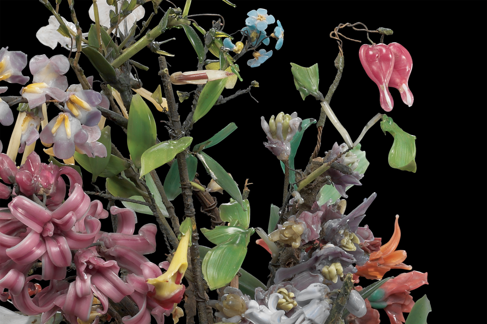

Bouquet of flowers
Many of the Glass Flowers represent a variety of North American plants, from rarities, like succisa, to such familiar flowers as salvia. In the Blaschkas’ hands, a natural mechanism like pollination takes on the urgency and life of a dramatic mise-en-scène immortalized in glass. Their succisa, for example, depicts two glass butterflies carrying pollen from one violet-colored flower to another. Even the most familiar plant forms, like grasses and ferns, prove revelatory when seen in replicas that enlarge their structures many hundreds of times.
BUY